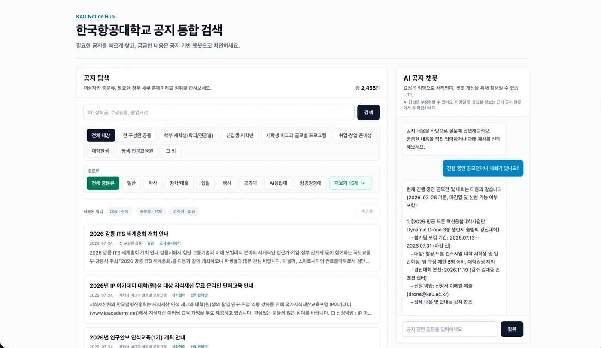
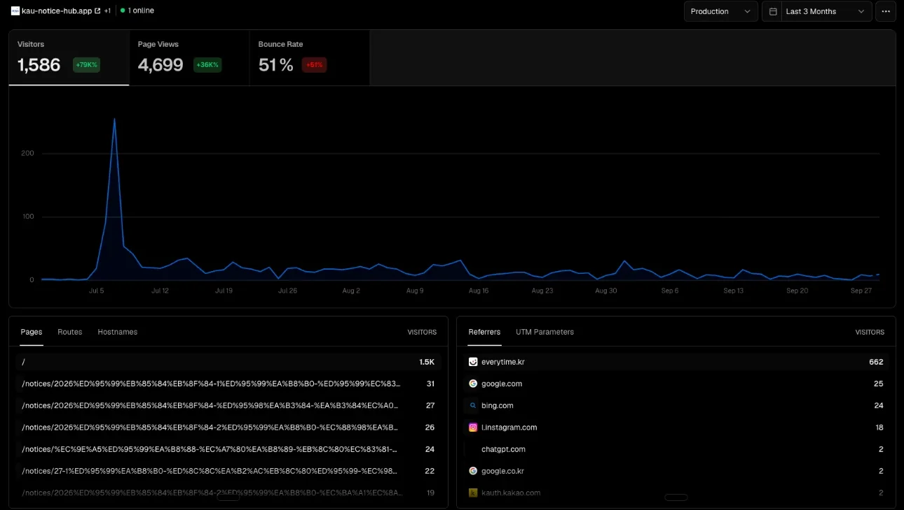

KAU Notice Hub
약 70개 사이트에 흩어진 교내 공지를 한곳에 모으고, 수집부터 키워드 검색 기반 RAG 질의응답까지 직접 만들었습니다. 지금 교내 구성원이 쓰고 있습니다.
문제학과·부서별 웹사이트에 매년 2,000건 넘는 공지가 흩어져 올라와, 장학금·행사 공지를 놓치는 일이 잦았습니다.
구현Python 크롤러로 수집해 FastAPI·SQLite에 적재하고, Next.js에서 출처·카테고리로 탐색합니다. RAG 챗봇은 LLM 호출을 세 단계로 나눴습니다. 질문을 분기해 검색 키워드를 JSON으로 뽑고, 그 키워드로 공지 본문을 grep해 모은 후보를 다시 골라, 고른 근거로 답합니다(gpt-4.1-mini). LLM 호출이 실패하면 질문 원문으로 검색하는 경로로 돌아갑니다. 이미지·HWP로만 올라온 공지는 비전 모델로 본문을 뽑아 검색 대상에 넣었습니다. 백엔드는 AWS Lightsail 단일 서버에 Docker로, 프론트엔드는 Vercel에 배포했습니다.

- 약 70개 교내 사이트Python crawler
- FastAPI · SQLiteingest · search API
- Next.jsbrowse UI
- RAG 챗봇keyword grep → rerank
- RAGASanswer eval
설계 결정과 운영운영하며 생긴 문제를 계측으로 확인하고 고쳤습니다.
- 질문 단어와 공지 단어가 달라('공모전'으로 물었는데 공지는 '해커톤') 단순 키워드 매칭이 놓치는 것을 확인하고, LLM이 검색 키워드를 고르게 바꿨습니다. 공지는 장학금·수강신청처럼 반복되는 핵심 단어가 많고 근거를 설명하기 쉬워, 벡터 임베딩 대신 키워드 검색을 유지했습니다. 글: RAG 고찰
- 자동 지표를 그대로 믿지 않았습니다. RAGAS answer_relevancy는 공지에 없는 날짜를 지어내지 않고 "명시되어 있지 않다"고 답한 경우를 0점 처리해(13건 평균 0.36), 사람 0/1 판정으로 바꿨습니다. 정답을 임의로 고정하고 운영 경로(분기·재정렬)를 거치지 않던 recall@k·MRR 평가는 지웠습니다. 평가는 기준일을 고정한 데이터 스냅샷에서만 돌려 실행 간 비교가 되게 했습니다. 글: RAG 평가 도입
- 공지를 메모리에 전부 올리던 초기 구조에서 OOM이 나, dmesg로 원인을 확인하고 SQLite로 바꾼 뒤 k6 부하 테스트로 검증했습니다. 글: 인프라 점검
- 비용·어뷰징에 대비해 rate limit·요청 크기·출력 토큰 상한을 걸고, Vercel Analytics로 사용 흐름을 봅니다. 글: 운영 리스크 글: 모니터링
- 질문자와 대상이 다른 공지가 근거에 섞이는 문제가 있었습니다(예: 대학원생의 질문에 학부생용 공지). 논문 작업에서 공지마다 붙인 대상 라벨을 운영에 적용해, 사용자가 신분을 고르면 그 대상의 공지만 근거로 쓰게 했습니다. 실제 운영 코드로 질문 날짜 시점을 재현한 평가 99문항(1회 실행)에서, 기존 34%였던 다른 대상 공지 혼입을 필터로 구조적으로 없앴고 첫 번째 근거가 정답 공지인 비율은 57% → 79%가 됐습니다.
현재최근 3개월 방문자가 1,500명을 넘고(Vercel Analytics), 유입 대부분이 교내 커뮤니티(에브리타임)입니다. 이어지는 연구는 Research에 적었습니다.

- 3개월 방문자
- 1,500+
- 수집 사이트
- 약 70
- 누적 수집 공지
- 2,400+
- 담당
- End-to-End